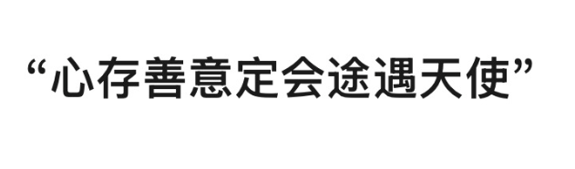

👋 新年好！欢迎来做马年预测～
我是🐴，专注马年新年预测与行动指引。我会用清晰、实用的方式帮你拆解运势与节奏。
我能帮你看：
⌛️ 提示：顶部可以切换线路，如果一个线路繁忙就换另一个试试！
⌛️ 手机用户：左滑打开功能菜单
想更精准的话，告诉我你的生肖或出生年，以及关注领域即可～
新年快乐| 仅供娱乐，命运掌握在自己手中
有问题欢迎反馈
如果觉得算命助手对您有帮助，欢迎赞赏支持作者继续开发维护！

📱 扫码赞赏，感谢支持！
🐴正在为你解读马年运势...